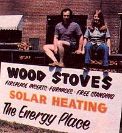

Richard and Maureen Pratt have been using photovoltaic cells to generate electricity for chores around their North Carolina home for over six years . . . in fact, several of the photos that accompany this article are of the Pratts' solarpowered tools.
The concept of benign, sun-produced electricity originally seemed little more than a curiosity to them . .. but upon discovering the amazing amount of work that could be done with just one panel, the pair became dedicated to the advancement of solar electricity.
The Pratts' original panel has been on the job for five years,. though cracks in its plastic covering allow it to see only sunny-day exposure. But their new ARCO Solar model, now residing on their roof, works come rain or shine. It's used to run a 12-volt DC chain saw (it cut all their firewood for the winter of 1980-81) . . . a rototiller .. . a pump to irrigate their remote vegetable garden . . . and a blower to provide air exchange in their hybrid solar home.
The enthusiasm that Rick and Maureen developed for sun power has led them to start their own energy enterprise: They sell photovoltaic panels, 12-volt tools and some appliances, solar air and water heaters, woodburning stoves, and other alternative energy equipment. Thus-for one couple-a fascination with better, cleaner ways to produce energy has turned into a successful business! (More information about the Pratts' venture can be had by sending a self-addressed, stamped envelope to Solar ALE, Dept. TMEN, P.O. Box 506, Columbus, North Carolina 28722.)
|
 |
|
|